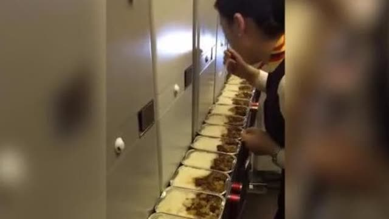
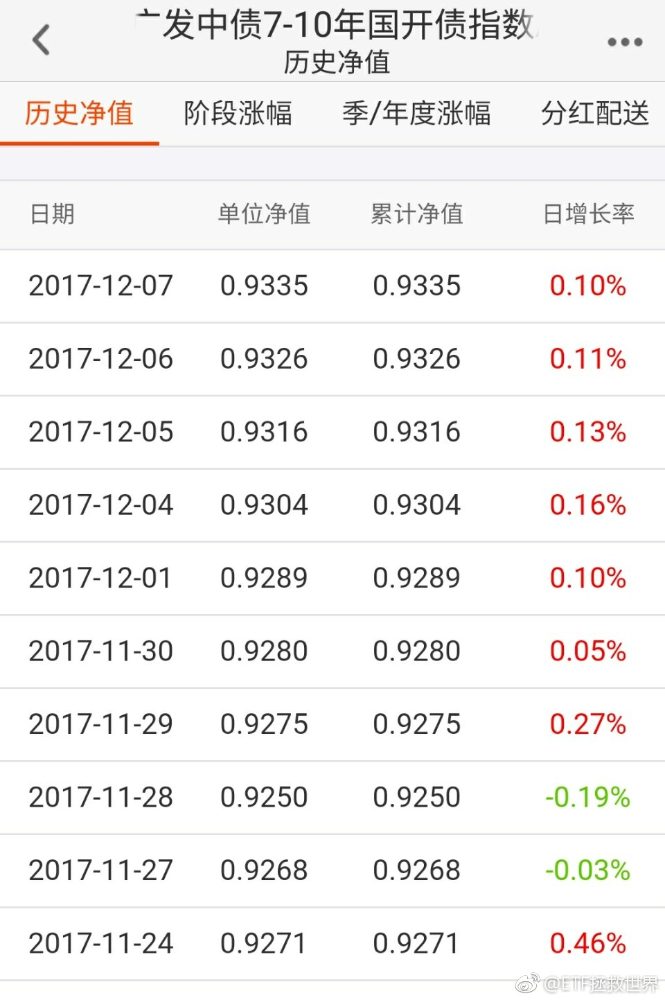

哈哈哈，妹子真的好饿。@澎湃新闻:【空姐“偷吃”多份剩余餐食：被停飞调查】澎湃新闻的秒拍视频 近日，一段“空姐吃多份飞机餐”的视频热传。12月7日，乌鲁木齐航空公司回应视频中的空姐确为公司乘务员，未按规定处理剩余餐食，试吃数份被拍下。目前已被给予停飞调查处分。（视频来源：综合网络）空姐“偷吃”多份剩余餐食：被停飞调查  654万次播放 00:43
回复@Doraven:是这样的。我不是说现在债券挣了多少钱。我是说最近股票调整很大，而债券在上涨，会为组合平滑收益。今年国开债跌了7%，我们浮亏0.7%。我自认为成本控制的不错。未来上涨的时候，会吃到所有上涨收益。挺好。//@Doraven:啊，e大，22号那一天跌了挺多的，为什么不放上来@ETF拯救世界:配置的意义 